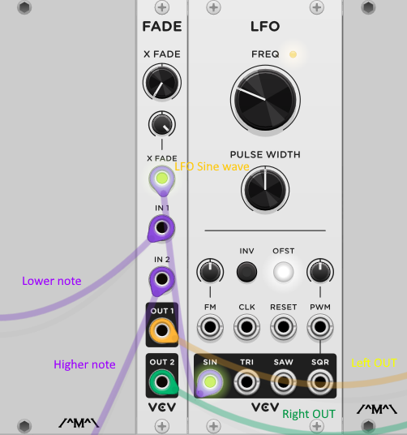
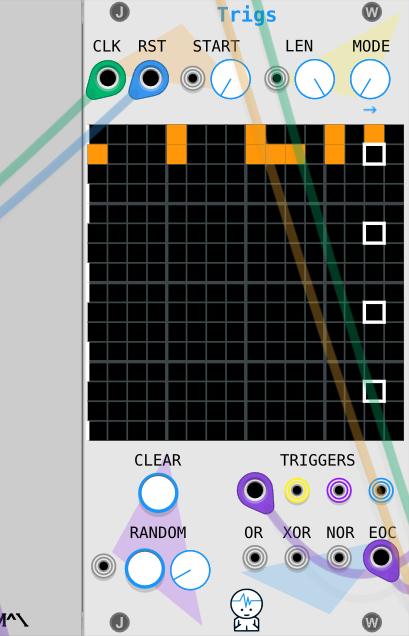
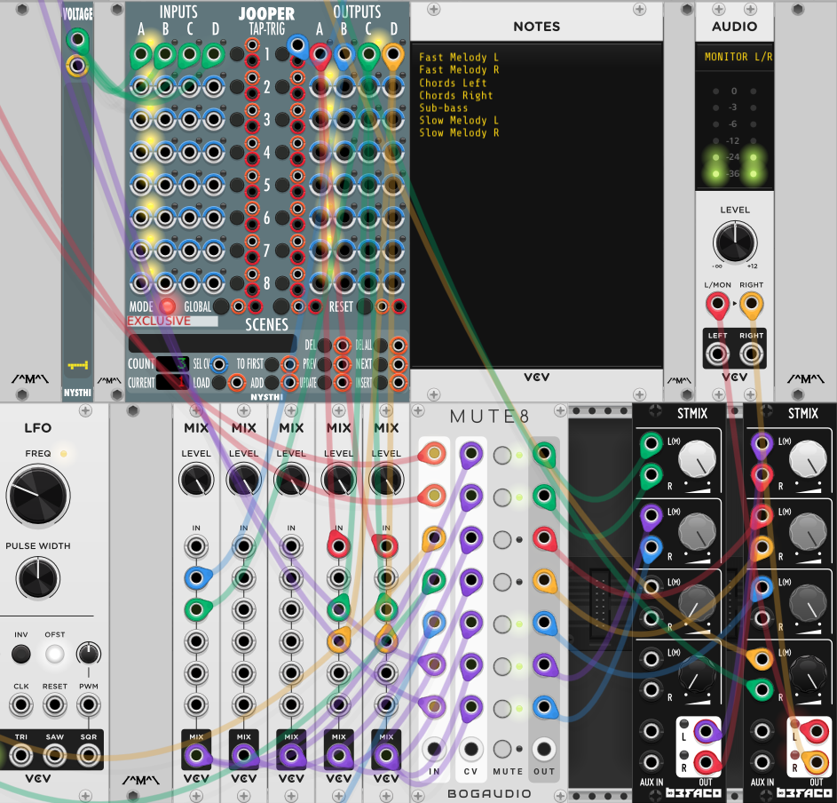
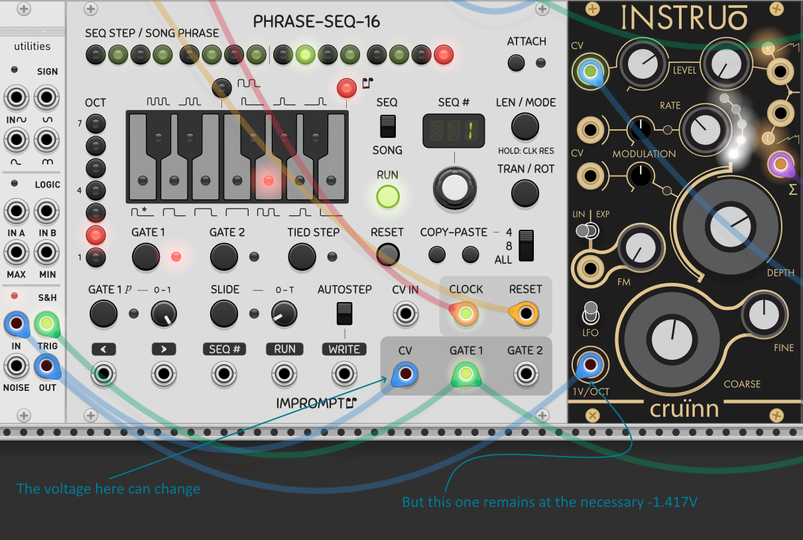

Fernando Garcia
Home Research Blog Other About me
"Kids" - From Stranger Things
Here's a full picture of the patch (high-res! Feel free to zoom into it)

The structure across every synth voice is the same module-wise, differing only in some parameters. By rows:
1. Midi Keyboard synth voice. This one has a VULT Debriatus module that's controlled by the Mod wheel of my Midi keyboard.
2. Main melody running in 1/4 notes. The clock input comes from the 1/2x output of the Imprmptu clocked module.
3. Main melody running in 1/8 notes. The clock input comes from the 1x output of the Imprmptu clocked module.
4. Bass chords. The chords in the song are just octaves. This one produces the lower note. The clock input comes from the 1/4x output of the Imprmptu clocked module.
5. The upper note for the chord above.
6. Additional bass note that happens in some parts of the song.
Additional details
Instead of playing both notes in the octave equially, a VCV Fade module was used to continuously pan each note side to side using an additional LFO:
This patch plays by itself, meaning that the different scenes are played one after another in a predetermined manner.
A JW-Modules Trig module is used to trigger changes in a NYSTHI Jooper module, which is the one that mutes signals in the BOG Audio Mute 8 module.
To mute the 6th sequencer:
An Audible Instruments Utilities module was used (in particular, the Sample and Hold part of it).
Music notes
The main melody is a loop of the notes G, A#, F, A#. For the first scene, they are played as 1/8 notes:
The chord progression is: G, A#, D#, F, all 4 played as octaves and as 1/2 notes.
The low (in the same octave as the low note in the chord octave) note that plays in the 2nd part is a constant G.